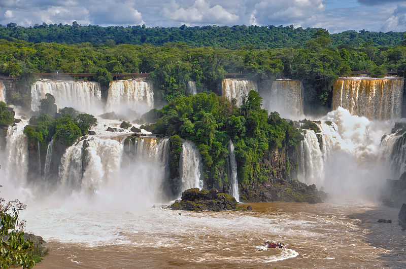
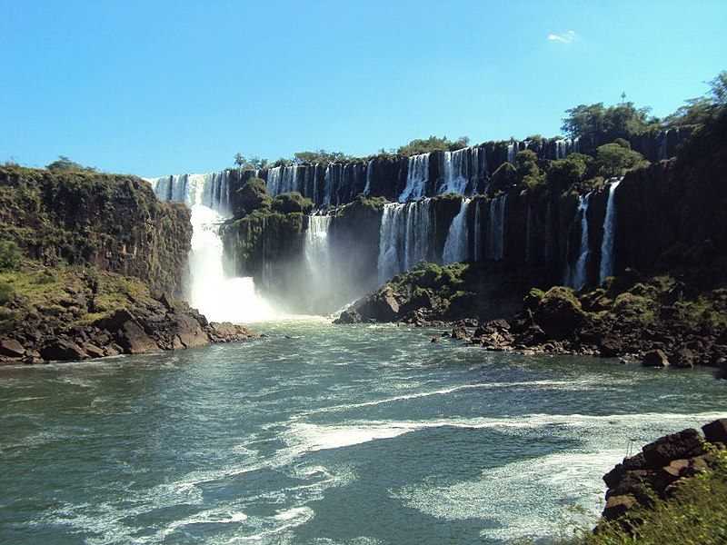

Parque nacional Iguazú
Parque nacional Iguazú o parque y reserva nacional Iguazú son los nombres con que se conoce en conjunto a dos áreas protegidas1 por el Gobierno nacional de Argentina: el parque nacional Iguazú2 propiamente dicho y la reserva nacional Iguazú. La superficie de esta área protegida es de 67.620 hectáreas, que se subdividen 59.945 hectáreas para el parque nacional y 7.675 hectáreas para la reserva nacional, que es en donde se encuentra un sector de servicios. Ambas áreas son administradas conjuntamente por la Administración de Parques Nacionales designando a un intendente.3

